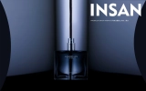
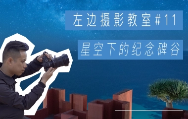
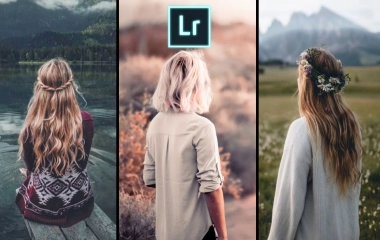
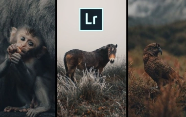
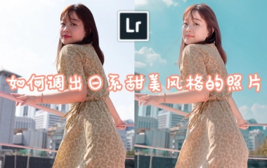
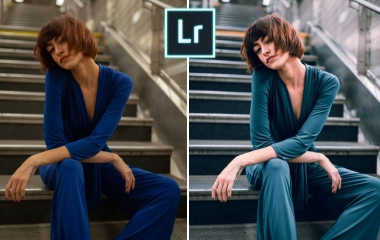

静物摄影技巧
「物影pro」有质感的产品照是怎么来的，商拍vlog教程
学会用光，两千的相机两万的质感，佳能m50/单灯/广告级大片拍摄教程

「物影PRO」反光板拍大片

「物影PRO」渲染级产品摄影布光教程
人像摄影技巧
狭小空间怎样实现影棚布光？素人模特大改造
单灯人像布光小技巧：教你如何拍出光线柔和的室内人像
【肥宅摄影之路】24与JK小姐姐边走边拍！阴天写真实拍！
【肥宅摄影之路】28古田桥清新JK实拍 佳能RP+50
风光摄影技巧
原图大揭秘！风光摄影前后期思路分享
预测到晚霞才外出？摄影师是如何计划天气和拍摄时机的？
雪天拍摄的“四字诀窍”，带你在海拔4200米的葫芦海拍摄风光大片

西班牙网红打卡地，带你看看星空下的纪念碑谷
后期调色技巧

晨光中的一抹倩影！INS爆火的背影照片调色思路实战分享！

INS上爆火的暗金色质感风格调色实战分享

如何调出小清新甜美风格的底饱和度日系照片！

现代蓝灰色性冷淡金属质感风格调色实战分享